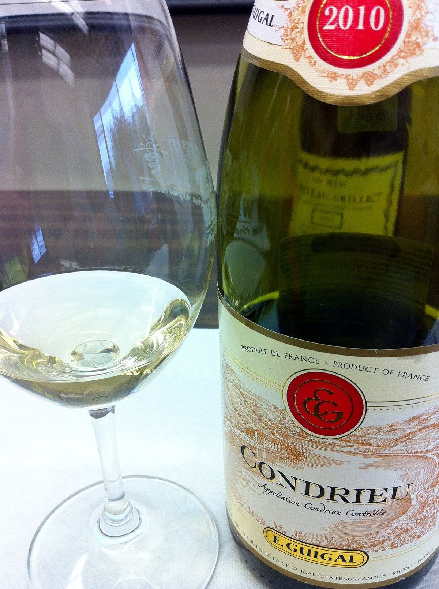

WHITE
An aromatic white from the northern Rhône, the grape of Condrieu, with apricot and floral aromas and a rich texture; it is also co-fermented with Syrah in Côte-Rôtie.

Viognier is native to the northern Rhône Valley, on the granite slopes south of Vienne. Its exact origin remains unknown, although genetic studies link it to other old varieties of the region. By the mid-twentieth century it was close to extinction, with only a few hectares left in Condrieu and Château-Grillet. From the 1980s its area grew rapidly, first in southern France and then in the New World.
It is a delicate vine with low, irregular yields and a susceptibility to powdery mildew. It needs a warm enough climate to ripen fully, because its aromas only appear at full ripeness, yet if it is picked late it easily loses acidity and gains alcohol. Choosing the harvest date is therefore crucial. In the northern Rhône it is grown on very steep terraces of decomposed granite.
It gives golden, full-bodied whites with an oily texture and moderate acidity. Its aroma is unmistakable: apricot, peach, orange blossom, honeysuckle, violet and sometimes spicy notes. It is usually drunk in its first few years, when the fruit is most expressive, although the best Condrieu gain complexity with some bottle age. It can be fermented in tank or barrel and is occasionally used for small quantities of sweet wine.
Its benchmark appellations are Condrieu and Château-Grillet. In Côte-Rôtie up to 20% Viognier may be co-fermented with Syrah, which stabilises colour and adds perfume. It has spread through the Languedoc and the southern Rhône as a varietal wine or in blends. In Australia it has become well known, both on its own and in the Shiraz-Viognier formula; it is also grown in California, South Africa, Chile, Argentina and Spain.
Its aromatic richness suits gently spiced dishes, curries, shellfish in sauce, poultry with apricots and goat’s cheeses. Serve at 10–13 °C.


